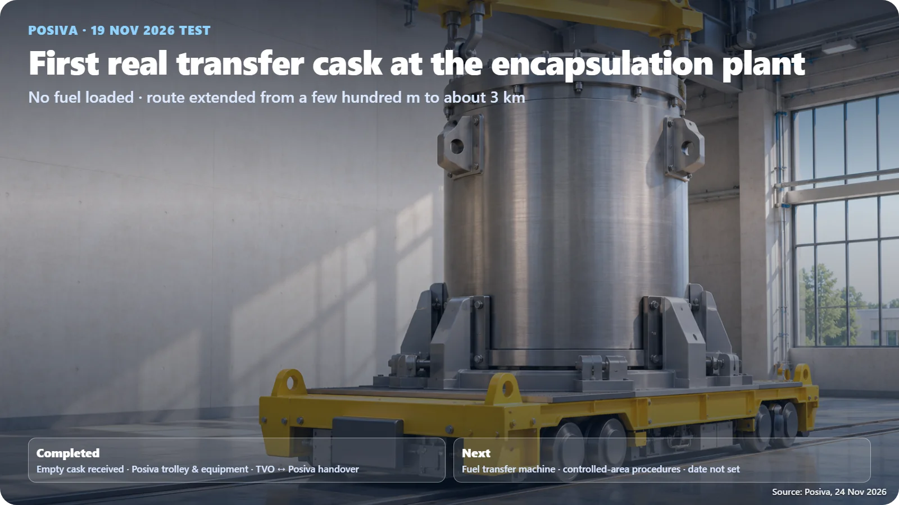
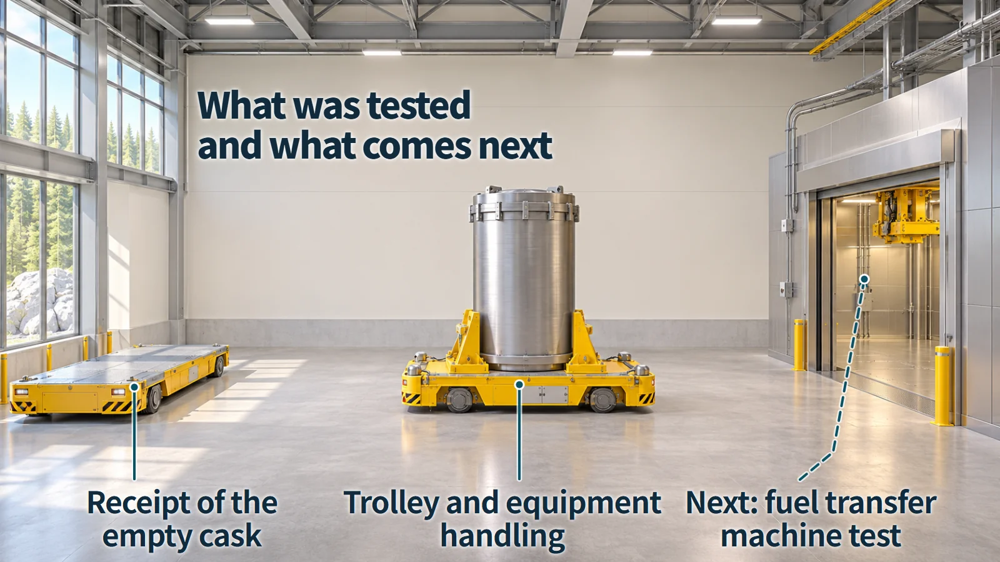
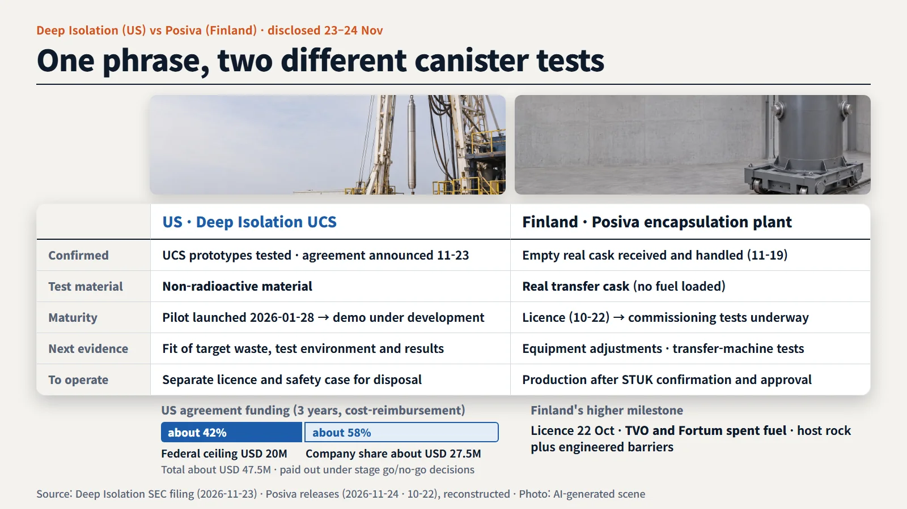

Spent fuel disposal
Pre-Operation Test Scope at Spent Fuel Disposal Facilities
Deep Isolation's Texas pilot and Posiva's first real-cask arrival show what each project still has to prove.
The phrase "canister test" can carry very different meanings depending on the project. On 23 and 24 November 2026, two such projects released updates on the same week. In the United States, Deep Isolation signed a three-year cooperative agreement to run a full-scale, non-radioactive demonstration of its Universal Canister System (UCS) and deep borehole disposal concept in Texas. In Finland, Posiva disclosed the first arrival of a real transfer cask at the Olkiluoto encapsulation plant, handled with the plant's own equipment and without any spent fuel loaded. The two headlines appeared almost side by side, yet the object of the test, the material used, and the project maturity are different. This post sets out what each test actually confirmed and what evidence is needed for the next decision.

What the Canister Tests Are Meant to Confirm
The two projects confirm different things. Deep Isolation is at the stage of developing a canister system itself — a single UCS meant to carry waste from storage through transport to final disposal, now moving from prototype testing to a field demonstration. Posiva is at a later stage of a different kind: it holds an operating licence for its encapsulation and final disposal facility (granted by the Finnish Government on 22 October 2026) and is now running commissioning tests, including handover procedures between its own operations and those of the utility.
A closer look sharpens the contrast. The US work develops a full-scale, full-depth borehole test using non-radioactive material. The Finnish test used a real transfer cask with no spent fuel loaded to exercise the handover between two operating organisations. According to the company's SEC filing, the Cameron pilot launched on 28 January 2026 with a groundbreaking ceremony, and the company is now developing a full-scale, at-depth demonstration using non-radioactive materials. The Finnish project is in commissioning after an operating licence. Each announcement, then, carries its own evidence trail and points to a separate upcoming decision.
What the Empty Transfer Cask Confirmed in Finland
On 24 November Posiva disclosed the results of a test carried out on 19 November. The encapsulation plant received a real transfer cask for the first time and handled it with the plant's own equipment. No spent fuel was loaded. Dozens of people from Posiva and the utility Teollisuuden Voima Oyj (TVO) coordinated area control, facility set-up, and radiation protection preparations. The cask was placed onto Posiva's transfer trolley and taken through the facility's lifting and transport equipment, so that the full handover between the two operating organisations could be observed from end to end.
The transport distance also changed noticeably. The route between the power plant and the interim storage facility had been a few hundred metres; this test extended the route to about 3 km, reaching the encapsulation plant. Moving from hundreds of metres to about 3 km means a genuinely new operating segment has been added, and exercising that segment with an empty cask first is a way to surface gaps in roles and procedures before real fuel is involved. The handover worked in this run, and Posiva has announced small equipment adjustments to improve cask handling.
The next test will use the real transfer cask's fuel positions to exercise the fuel transfer machine and apply controlled-area procedures. The next test date has not been announced. In other words, this run fills one slot — "the plant can receive a real cask and handle it with its own equipment" — and the slot that follows (fuel-position handling, then controlled-area procedures) will mark the remaining distance before production operation.

The Scope of the Non-Radioactive Field Demonstration
On 23 November Deep Isolation announced a three-year, cost-reimbursement cooperative agreement with the US Department of Energy's Advanced Research Projects Agency–Energy (ARPA-E). The federal funding ceiling is up to USD 20 million, with a company cost share of about USD 27.5 million, for an approved total project cost of about USD 47.5 million. Doing the arithmetic on the disclosed figures, the federal share is about 42% of the approved total (20 / 47.5), and the company share is about 58%. Actual disbursement is cost-reimbursement, subject to the company's cost share, technical milestones, environmental and licensing conditions, and go/no-go decisions at each stage.
The field work is based in Cameron, Texas, and uses non-radioactive material at full depth and full scale. According to the SEC filing, the Commercialization Pilot officially launched with a groundbreaking ceremony on 28 January 2026, and the company is developing a full-scale, at-depth deep borehole demonstration. The launch is a project start, with demonstration results to follow in later stages. The company says earlier work produced and tested UCS prototypes under conditions representative of borehole environments. The ongoing demonstration extends that prototype work into actual field conditions.
Target applications include advanced-reactor spent fuel and high-level waste from recycling. The company also expects to support storage and transport canister development for Westinghouse's eVinci micro-reactor fuel and a potential US Nuclear Regulatory Commission (NRC) licensing path for that use. The practical effect is that the agreement secures resources to test one type of canister system under field conditions. Commercial disposal of real radioactive waste depends on a separate licensing and safety case.
Evidence That Feeds the Next Decision
The current standing of the two projects can be summarised like this:
| Item | Deep Isolation UCS (US) | Posiva encapsulation plant (Finland) |
|---|---|---|
| What has been confirmed | UCS prototype tests done; cooperative agreement announced on 11-23 | Empty real cask received and handled on the plant's own trolley on 11-19 |
| Test material | Non-radioactive material | Real transfer cask, no fuel loaded |
| Maturity | Pilot launched 28 January 2026; agreement announced 23 November 2026; full-scale demonstration under development | Operating licence granted 10-22 → commissioning tests underway |
| Evidence for the next decision | How target waste, test environment, and demonstration results line up | Results of equipment adjustments and the fuel transfer machine tests to follow |
| Condition for operational entry | Commercial disposal requires a separate licence and safety case | Commissioning plus STUK confirmation and approval before production operation |
(Reconstructed from Deep Isolation SEC filing, 2026-11-23, and Posiva press releases, 2026-11-24 and 2026-10-22.)
A broader milestone sits above the Finnish test. The Finnish Government granted an operating licence to the Olkiluoto encapsulation and final disposal facility on 22 October 2026. The waste covered is the spent fuel of TVO and Fortum, and long-term safety rests on combined isolation by the host rock and engineered barriers. Before production operation begins, the remaining steps are commissioning tests and confirmation and approval by the Finnish Radiation and Nuclear Safety Authority (STUK). The empty-cask test now disclosed is one step within that sequence.
On the US side, the project is tied to stage-by-stage go/no-go decisions. The approved total project cost and the federal ceiling are figures on paper; actual spend tracks milestone progress and condition fulfilment. The useful way to read and compare the two projects, then, is to identify the specific test records and the approving body for each step: for Finland, the equipment adjustments and the subsequent fuel transfer machine tests; for the US, the physical test article, the target environment, and the stage-by-stage disbursement decisions. "Canister test" is one phrase, but inside the long process of spent fuel disposal it covers very different things, and reading those differences keeps each project's progress visible without inflating or discounting it.
